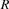
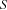
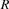
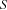
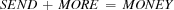
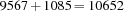

3.2 Example: Send More Money
We will now write a script for the Send More Money Puzzle.
Problem Specification
The Send More Money Problem consists in finding distinct digits for the letters  ,
,  ,
,  ,
,  , , , ,
, , , ,  such that and are different from zero (no leading zeros) and the equation
such that and are different from zero (no leading zeros) and the equation

is satisfied. The unique solution of the problem is .
Model
We model the problem by having a variable for every letter, where the variable stands for the digit associated with the letter. The constraints are obvious from the problem specification.
Distribution Strategy
We distribute on the variables for the letters with a first-fail strategy. The variables are ordered according to the alphabetic order of the letters. The strategy tries the least possible value of the selected variable.
proc {Money Root}
S E N D M O R Y
in
Root = sol(s:S e:E n:N d:D m:M o:O r:R y:Y) % 1
Root ::: 0#9 % 2
{FD.distinct Root} % 3
S \=: 0 % 4
M \=: 0
1000*S + 100*E + 10*N + D % 5
+ 1000*M + 100*O + 10*R + E
=: 10000*M + 1000*O + 100*N + 10*E + Y
{FD.distribute ff Root}
end
Figure 3.1: A script for the Send More Money Puzzle.
Script
Figure 3.1 shows a script realizing the model and distribution strategy just discussed. The script first declares a local variable for every letter. Then it posts the following constraints:
Rootis a record that has a field for every letter. The fields ofRootare the digits for the corresponding letters. This constraint is basic.The fields of
Rootare integers in the domain0#9. This constraint is basic.The fields of
Rootare pairwise distinct. This constraint is nonbasic.The values of the variables
SandMare different from zero (no leading zeros). These constraints are nonbasic.The digits for the letters satisfy the equation
SEND+MORE=MONEY. This constraint is nonbasic.
Posting of constraints
posting of constraints is defined differently for basic and nonbasic constraints. Basic constraints are posted by telling them to the constraint store. Nonbasic constraints are posted by creating propagators implementing them.
Note that the propagators for S\=:0 and M\=:0 can immediately write their complete information into the constraint store since the store already knows domains for S and M.
The last line {FD.distribute ff Root} posts a distributor that will distribute on the field of Root with the first-fail strategy (specified by the atom ff). Equivalently, we could write
{FD.distribute ff [D E M N O R S Y]} and thus specify the variables and their order explicitly. The order of the fields of Root is given by the canonical ordering of the respective features d, e, m, n, o, r, s, and y.
The statement
{Browse {SearchAll Money}}
will compute and display the list of all solutions of the Send More Money Puzzle:
[sol(d:7 e:5 m:1 n:6 o:0 r:8 s:9 y:2)]
To understand the search process defined by Money, we need more information than just the list of solutions found. Obviously, it would be useful to see a graphical representation of the search tree. It would also be nice if we could see for every node of the search tree what information about the solution was accumulated in the constraint store when the respective space became stable. Finally, it would be nice to see for every arc of the tree with which constraint it was distributed.
Figure 3.2 shows the search tree explored by Money together with the information just mentioned. This gives us a good understanding of the search process defined by Money. Note that the search tree is quite small compared to the  candidates a naive generate and test method would have to consider.
candidates a naive generate and test method would have to consider.